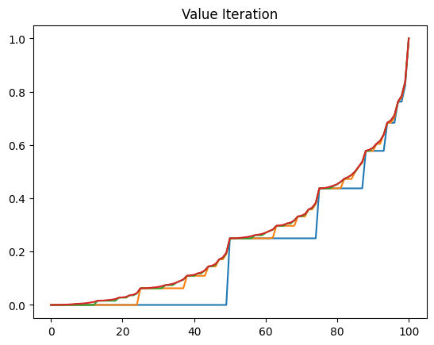
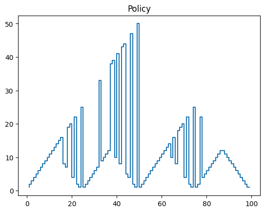
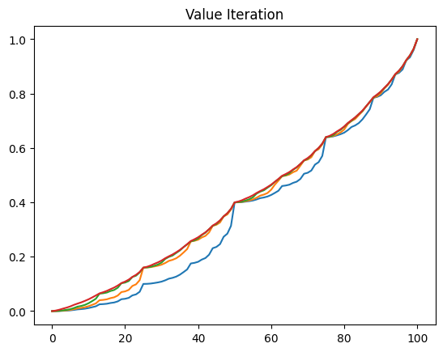
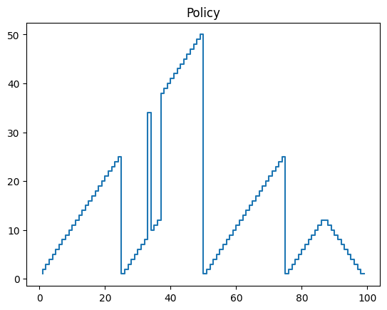
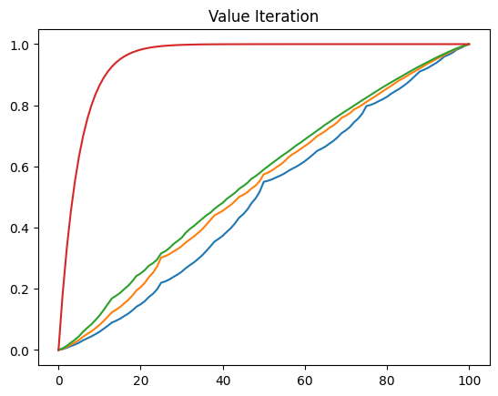
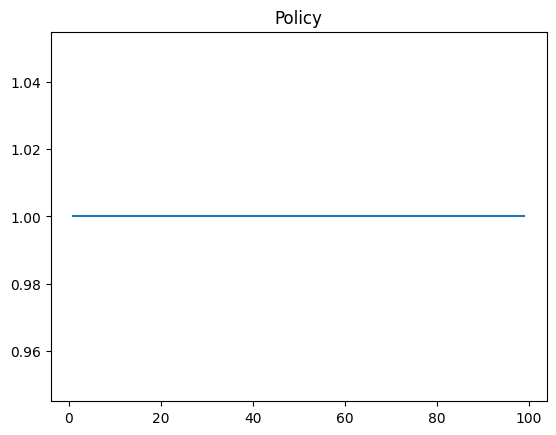
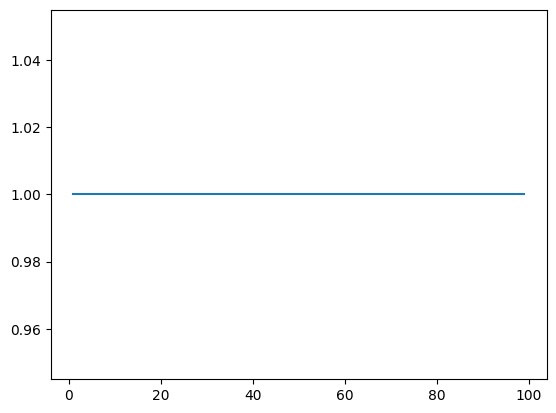

import numpy as np # noqa
from typing import Callable # noqa
import math # noqa
import matplotlib.pyplot as plt # noqa
import itertools # noqa
import functools # noqa
from scipy.stats import poisson # noqa
import time # noqaSutton’s Reinforcement Learning Chapter 4: Dynamic Programming
Implementations of algorithms and code solutions for some exercises
loc_1_cars = 20
loc_2_cars = 2
num_cars = 20
# Num rent is some infinite distribution
# But in reality it ranges from number of cars available to 0 (we can adjust the PMF correspondingly)
# Num return is also some infinite dist, but it ranges from 0 to num_cars - num_rent
# So given loc_1_cars and loc_2_cars, we can find the range of num_rent and num_ret respectively
# We iterate and come up with all possible combinations of these values
# Use their probability distributions to calculate probabilities of each end statepoisson.pmf([1, 2, 3], 3)array([0.14936121, 0.22404181, 0.22404181])# one = np.arange(5)
# two = np.arange(5)
# one - two
def final_state_prob_dist(max_cars, loc_1_cars, rent_poisson, return_poisson):
# Multiply number of cars that can be rented with number of cars that can be returned
num_rows = (loc_1_cars + 1) * (max_cars + 1)
loc_1_cars_list = np.repeat(loc_1_cars, num_rows)
loc_1_cars_rent_list = np.repeat(np.arange(loc_1_cars + 1), max_cars + 1)
loc_1_cars_return_list = np.tile(np.arange(max_cars + 1), loc_1_cars + 1)
# print(loc_1_cars_list)
# print(loc_1_cars_rent_list)
# print(loc_1_cars_return_list)
final = loc_1_cars - loc_1_cars_rent_list + loc_1_cars_return_list
# print(final)
# Get the indices of the states where the final number of cars is less than or equal to max_cars
indices = np.where(final <= max_cars)
loc_1_cars_list = loc_1_cars_list[indices]
loc_1_cars_rent_list = loc_1_cars_rent_list[indices]
loc_1_cars_return_list = loc_1_cars_return_list[indices]
# print(loc_1_cars_list)
# print(loc_1_cars_rent_list)
# print(loc_1_cars_return_list)
# Apply poission.pmf(loc_1_cars_rent_list, 3) to get the probabilities of each rent value
loc_1_cars_rent_prob = np.zeros(len(loc_1_cars_rent_list))
max_rent_prob = 1 - poisson.cdf(loc_1_cars - 1, rent_poisson)
for i in range(len(loc_1_cars_rent_list)):
if loc_1_cars_rent_list[i] == loc_1_cars:
loc_1_cars_rent_prob[i] = max_rent_prob
else:
loc_1_cars_rent_prob[i] = poisson.pmf(loc_1_cars_rent_list[i], rent_poisson)
# print("Loc 1 cars rent prob", loc_1_cars_rent_prob)
max_ret = loc_1_cars - loc_1_cars_rent_list
# print("Max_ret", max_ret)
loc_1_cars_return_prob = np.zeros(len(loc_1_cars_return_list))
for i in range(len(loc_1_cars_return_list)):
if loc_1_cars_return_list[i] == max_ret[i]:
loc_1_cars_return_prob[i] = 1 - poisson.cdf(max_ret[i] - 1, return_poisson)
else:
loc_1_cars_return_prob[i] = poisson.pmf(
loc_1_cars_return_list[i], return_poisson
)
# print("Loc 1 cars return prob", loc_1_cars_return_prob)
# print("Sum: ", sum(np.unique(loc_1_cars_return_prob)))
final_cars = loc_1_cars_list - loc_1_cars_rent_list + loc_1_cars_return_list
final_prob = loc_1_cars_rent_prob * loc_1_cars_return_prob
# Sum up all final_prob for each unique end state
sums = np.bincount(final_cars, weights=final_prob)
# sum(sums)
return sumsfinal_states = [1, 1, 2, 2, 3, 3]
final_prob = [0.1, 0.2, 0.3, 0.4, 0.5, 0.6]
unique_final_probs = np.bincount(final_states, weights=final_prob)
unique_final_probsarray([0. , 0.3, 0.7, 1.1])poisson.pmf(np.arange(4), 3)array([0.04978707, 0.14936121, 0.22404181, 0.22404181])poisson.cdf(3, 3)0.6472318887822313np.arange(4)array([0, 1, 2, 3])# Parameters
loc_1_cars = 20000
loc_2_cars = 2
num_cars = 100000
# Generate possible values for rent and returned
rent = np.arange(loc_1_cars + 1)
returned = np.arange(num_cars - loc_1_cars + 1)
# Create meshgrid for all combinations
rent_grid, returned_grid = np.meshgrid(rent, returned, indexing="ij")
# Calculate remaining cars
remaining_grid = loc_1_cars - rent_grid
# Calculate sum of remaining and returned cars
sum_grid = remaining_grid + returned_grid
# Filter combinations where sum exceeds num_cars
valid_combinations = sum_grid <= num_cars
# Extract valid rent and returned combinations
valid_rent = rent_grid[valid_combinations]
valid_returned = returned_grid[valid_combinations]
print("Valid rent combinations:", valid_rent)
print("Valid returned combinations:", valid_returned)Valid rent combinations: [ 0 0 0 ... 20000 20000 20000]
Valid returned combinations: [ 0 1 2 ... 79998 79999 80000]# %%timeit
loc_1_cars = 20000
loc_2_cars = 2
num_cars = 100000
for rent in range(loc_1_cars + 1):
remaining = loc_1_cars - rent
for returned in range(num_cars - remaining + 1):
1 + 1Exercise 4.7
class JacksCarRental:
def __init__(
self,
cars=20,
cost_per_car_moved=2,
profit_per_car=10,
loc_1_rent=3,
loc_2_rent=4,
loc_1_ret=3,
loc_2_ret=2,
max_action=5,
theta=10,
gamma=0.9,
):
self.cars = cars
self.cost_per_car_moved = cost_per_car_moved
self.profit_per_car = profit_per_car
self.loc_1_rent = loc_1_rent
self.loc_2_rent = loc_2_rent
self.loc_1_ret = loc_1_ret
self.loc_2_ret = loc_2_ret
self.max_action = max_action
self.theta = theta
self.gamma = gamma
(
self.loc_1_rent_dist,
self.loc_2_rent_dist,
self.loc_1_ret_dist,
self.loc_2_ret_dist,
) = (
poisson(self.loc_1_rent),
poisson(self.loc_2_rent),
poisson(self.loc_1_ret),
poisson(self.loc_2_ret),
)
self.states = list(itertools.product(range(cars + 1), range(cars + 1)))
def policy_iteration(self):
policy_stable = False
state_values = np.zeros((self.cars + 1, self.cars + 1), dtype=int)
policy = np.zeros((self.cars + 1, self.cars + 1), dtype=int)
policies = []
iterations = 0
while not policy_stable:
new_state_values = self.policy_evaluation(state_values, policy)
policy, policy_stable = self.policy_improvement(new_state_values, policy)
policies.append(policy.copy())
iterations += 1
print(f"Policy iteration {iterations}")
return state_values, policy, policies
def policy_evaluation(self, state_values, policy):
biggest_change = np.inf
iterations = 0
while biggest_change > self.theta:
biggest_change = 0
num_states = 0
average_times = []
for i, j in self.states:
num_states += 1
action = policy[i][j]
original_value = state_values[i][j]
start = time.time()
expected_reward = self.expected_reward((i, j), action)
expected_value = self.expected_value_2((i, j), action, state_values)
# state_values[i][j] = self.expected_value((i, j), action, state_values)
state_values[i][j] = expected_reward + expected_value
end = time.time()
average_times.append(end - start)
biggest_change = max(
biggest_change, abs(original_value - state_values[i][j])
)
iterations += 1
print(f"Policy evaluation {iterations}")
return state_values
def policy_improvement(self, state_values, policy):
policy_stable = True
for i, j in self.states:
old_action = policy[i][j]
possible_actions = list(range(-j, i + 1))
best_action = None
best_value = -np.inf
if possible_actions == []:
continue
for action in possible_actions:
action_value = self.expected_value((i, j), action, state_values)
best_value = max(best_value, action_value)
if action_value == best_value:
best_action = action
policy[i][j] = best_action
if old_action != best_action:
policy_stable = False
return policy, policy_stable
def expected_reward(self, state, action):
(loc_1_cars, loc_2_cars) = state
loc_1_cars -= action
loc_2_cars += action
cost = -(self.cost_per_car_moved * abs(action))
# Find expected value of returned cards for loc 1
loc_1_req = sum(self.loc_1_rent_dist.pmf(i) * i for i in range(loc_1_cars + 1))
loc_1_surplus = (1 - self.loc_1_rent_dist.cdf(loc_1_cars)) * loc_1_cars
expected_loc_1_returned = loc_1_req + loc_1_surplus
# Find expected value of returned cards for loc 2
loc_2_req = sum(self.loc_2_rent_dist.pmf(i) * i for i in range(loc_2_cars + 1))
loc_2_surplus = (1 - self.loc_2_rent_dist.cdf(loc_2_cars)) * loc_2_cars
expected_loc_2_returned = loc_2_req + loc_2_surplus
return cost + self.profit_per_car * (
expected_loc_1_returned + expected_loc_2_returned
)
def expected_value_2(self, state, action, state_values):
(loc_1_cars, loc_2_cars) = state
loc_1_cars -= action
loc_2_cars += action
loc_1_state_dist = final_state_prob_dist(
self.cars, loc_1_cars, self.loc_1_rent, self.loc_1_ret
)
loc_2_state_dist = final_state_prob_dist(
self.cars, loc_2_cars, self.loc_2_rent, self.loc_2_ret
)
expected_value = 0
for loc_1_cars, loc_1_prob in enumerate(loc_1_state_dist):
for loc_2_cars, loc_2_prob in enumerate(loc_2_state_dist):
# reward = self.expected_reward((loc_1_cars, loc_2_cars), action)
expected_value += (
loc_1_prob
* loc_2_prob
* (
# reward + self.gamma * state_values[loc_1_cars][loc_2_cars]
self.gamma * state_values[loc_1_cars][loc_2_cars]
)
)
return expected_value
def expected_value(self, state, action, state_values):
expected_value = 0
(loc_1_cars, loc_2_cars) = state
# Cars moved at night
loc_1_cars -= action
loc_2_cars += action
cost = 2 * abs(action)
sum_prob_loc_1_rented = 0
for loc_1_rented in range(loc_1_cars + 1):
if loc_1_rented == loc_1_cars:
p_loc_1_rented = 1 - sum_prob_loc_1_rented
else:
p_loc_1_rented = self.poisson(self.loc_1_rent, loc_1_rented)
sum_prob_loc_1_rented += p_loc_1_rented
sum_prob_loc_2_rented = 0
for loc_2_rented in range(loc_2_cars + 1):
if loc_2_rented == loc_2_cars:
p_loc_2_rented = 1 - sum_prob_loc_2_rented
else:
p_loc_2_rented = self.poisson(self.loc_2_rent, loc_2_rented)
sum_prob_loc_2_rented += p_loc_2_rented
sum_prob_loc_1_returned = 0
max_returnable_1 = self.cars - (loc_1_cars - loc_1_rented)
for loc_1_returned in range(max_returnable_1 + 1):
if loc_1_returned == max_returnable_1:
p_loc_1_returned = 1 - sum_prob_loc_1_returned
else:
p_loc_1_returned = self.poisson(self.loc_1_ret, loc_1_returned)
sum_prob_loc_1_returned += p_loc_1_returned
max_returnable_2 = self.cars - (loc_2_cars - loc_2_rented)
sum_prob_loc_2_returned = 0
for loc_2_returned in range(max_returnable_2 + 1):
if loc_2_returned == max_returnable_2:
p_loc_2_returned = 1 - sum_prob_loc_2_returned
else:
p_loc_2_returned = self.poisson(
self.loc_2_ret, loc_2_returned
)
sum_prob_loc_2_returned += p_loc_2_returned
reward = 10 * (loc_1_rented + loc_2_rented)
next_loc_1_cars = loc_1_cars + loc_1_returned - loc_1_rented
next_loc_2_cars = loc_2_cars + loc_2_returned - loc_2_rented
value = (
reward
- cost
+ self.gamma
* state_values[next_loc_1_cars][next_loc_2_cars]
)
probability = (
p_loc_1_rented
* p_loc_2_rented
* p_loc_1_returned
* p_loc_2_returned
)
expected_value += probability * value
return expected_valuejacks_car_rental = JacksCarRental(cars=20)
state_values, policy, policies = jacks_car_rental.policy_iteration()
print("State values:", state_values)
print("Policy:", policy)Policy evaluation 1
Policy evaluation 2KeyboardInterrupt: import time
def transition(state, action):
(loc_1_cars, loc_2_cars) = state
loc_1_cars -= action
loc_2_cars += action
return (loc_1_cars, loc_2_cars)
def actions(state):
(loc_1_cars, loc_2_cars) = state
return range(loc_1_cars, -loc_2_cars - 1)
@functools.cache
def poisson(lamb, n):
"""
:param lamb: lambda parameter of poisson distribution, rate
:param n: n variable of poisson distribution, number of occurrences
:return: probability of the event
"""
return (lamb**n) * math.exp(-lamb) / math.factorial(n)
# Expected value of taking action from state
def expected_value(state, action, state_values, discount):
expected_value = 0
(loc_1_cars, loc_2_cars) = state
# Cars moved at night
loc_1_cars -= action
loc_2_cars += action
cost = 2 * abs(action)
sum_prob_loc_1_rented = 0
for loc_1_rented in range(loc_1_cars + 1):
if loc_1_rented == loc_1_cars:
p_loc_1_rented = 1 - sum_prob_loc_1_rented
else:
p_loc_1_rented = poisson(3, loc_1_rented)
sum_prob_loc_1_rented += p_loc_1_rented
sum_prob_loc_2_rented = 0
for loc_2_rented in range(loc_2_cars + 1):
if loc_2_rented == loc_2_cars:
p_loc_2_rented = 1 - sum_prob_loc_2_rented
else:
p_loc_2_rented = poisson(4, loc_2_rented)
sum_prob_loc_2_rented += p_loc_2_rented
sum_prob_loc_1_returned = 0
max_returnable_1 = 20 - (loc_1_cars - loc_1_rented)
for loc_1_returned in range(max_returnable_1 + 1):
if loc_1_returned == max_returnable_1:
p_loc_1_returned = 1 - sum_prob_loc_1_returned
else:
p_loc_1_returned = poisson(3, loc_1_returned)
sum_prob_loc_1_returned += p_loc_1_returned
max_returnable_2 = 20 - (loc_2_cars - loc_2_rented)
sum_prob_loc_2_returned = 0
for loc_2_returned in range(max_returnable_2 + 1):
if loc_2_returned == max_returnable_2:
p_loc_2_returned = 1 - sum_prob_loc_2_returned
else:
p_loc_2_returned = poisson(2, loc_2_returned)
sum_prob_loc_2_returned += p_loc_2_returned
reward = 10 * (loc_1_rented + loc_2_rented)
next_loc_1_cars = loc_1_cars + loc_1_returned - loc_1_rented
next_loc_2_cars = loc_2_cars + loc_2_returned - loc_2_rented
value = (
reward
- cost
+ discount * state_values[next_loc_1_cars][next_loc_2_cars]
)
probability = (
p_loc_1_rented
* p_loc_2_rented
* p_loc_1_returned
* p_loc_2_returned
)
expected_value += probability * value
return expected_value
def policy_evaluation(states, state_values, policy, discount, theta):
# Big number
biggest_change = np.inf
num_iterations = 0
while biggest_change > theta:
num_iterations += 1
print(f"Policy evaluation iteration {num_iterations}")
biggest_change = 0
num_states = 0
average_times = []
for i, j in states:
num_states += 1
# print(f"State {num_states}")
action = policy[i][j]
# Reward from taking the action + discounted value of the next state
original_value = state_values[i][j]
# Sum of probability of particular state reward pair multiplied by reward and next state value
# Calculate time taken for one expected value:
start = time.time()
state_values[i][j] = expected_value((i, j), action, state_values, discount)
end = time.time()
average_times.append(end - start)
# print(f"Time taken for one expected value: {end - start}")
biggest_change = max(
biggest_change, abs(original_value - state_values[i][j])
)
print("Average time: ", np.mean(average_times))
print("Biggest change: ", biggest_change)
return state_values
def policy_improvement(states, state_values, policy, discount):
policy_stable = True
for i, j in states:
old_action = policy[i][j]
possible_actions = actions((i, j))
best_action = None
best_value = -np.inf
for action in possible_actions:
# action_value = reward(s, action) + discount * state_values[next_state]
action_value = expected_value((i, j), action, state_values, discount)
best_value = max(best_value, action_value)
if action_value == best_value:
best_action = action
policy[i][j] = best_action
if old_action != best_action:
policy_stable = False
return policy, policy_stable
def policy_iteration(states, state_values, policy, discount=0.9, theta=10):
policy_stable = False
while not policy_stable:
new_state_values = policy_evaluation(
states, state_values, policy, discount, theta
)
policy, policy_stable = policy_improvement(
states, new_state_values, policy, discount
)
return state_values, policy# num_states = 21
num_states = 11
states = list(itertools.product(range(num_states), range(num_states)))
state_values = np.zeros((num_states, num_states), dtype=int)
policy = np.zeros((num_states, num_states), dtype=int)
discount = 0.9
theta = 10
# policy_evaluation(state_values, policy, discount, theta)Policy evaluation iteration 1IndexError: index 11 is out of bounds for axis 0 with size 11# state_values, policy = policy_iteration()NameError: name 'policy_iteration' is not definedExercise 4.9
# Generalized value_iteration function
# The "dynamics" of the problem:
# states: A list of states. Each state is represented as a tuple
# state_values: A dictionary mapping states to their values
# policy: A dictionary mapping states to actions
# actions(s): The possible actions in state s
# reward(s, a): The reward for taking action a in state s
# transition(s, a): Returns mapping of possible next states to their probabilities, given action a was taken in state s
def value_iteration(
states: np.ndarray,
state_values: np.ndarray,
policy: list[dict[int, int]],
actions: Callable[[int], np.ndarray],
reward: Callable[[int, int], int],
transition: Callable[[int, int], dict[int, float]],
gamma=1,
theta=0.1,
):
def action_evaluation(s, action):
transitions = transition(s, action)
value = sum(
probability * (reward(s, action) + gamma * state_values[next_state])
for next_state, probability in transitions.items()
)
return value
sweeps = []
sweep_count = 0
biggest_change = np.inf
while biggest_change > theta:
biggest_change = 0
for s in states:
original_value = state_values[s]
best_value = -np.inf
possible_actions = actions(s)
for action in possible_actions:
value = action_evaluation(s, action)
if value > best_value:
best_value = value
state_values[s] = best_value
biggest_change = max(biggest_change, abs(original_value - state_values[s]))
if sweep_count < 3:
sweeps.append(state_values.copy())
sweep_count += 1
sweeps.append(state_values.copy())
# Output deterministic policy pi and value function v
for s in states:
possible_actions = actions(s)
best_value = -np.inf
best_action = None
for a in possible_actions:
value = action_evaluation(s, a)
if value > best_value:
best_value = value
best_action = a
policy[s] = best_action
return state_values, policy, sweeps# State ranges from 1 to 99
states = np.arange(1, 100)
# State values ranges from 0 to 100.
# We include 0 and 100 in state_values as dummy terminal states.
state_values = np.zeros(101)
state_values[100] = 1
policy = {s: 0 for s in states}
actions = lambda s: np.arange(1, np.minimum(s, 100 - s) + 1)
# Reward is 0 for this problem
reward = lambda s, a: 0
# Generate three transition functions, with differing probabilities
results = []
# for ph in [0.25, 0.4, 0.55]:
# transition = lambda s, a: {s + a: ph, s - a: 1 - ph}
# state_values_result, policy_result, sweeps = value_iteration(
# states=states,
# state_values=state_values,
# policy=policy,
# actions=actions,
# reward=reward,
# transition=transition,
# theta=1e-10,
# )
# print(policy_result)
# results.append((sweeps.copy(), policy_result.copy())){1: 1, 2: 2, 3: 3, 4: 4, 5: 5, 6: 6, 7: 7, 8: 8, 9: 9, 10: 10, 11: 11, 12: 12, 13: 13, 14: 14, 15: 15, 16: 16, 17: 8, 18: 7, 19: 19, 20: 20, 21: 4, 22: 22, 23: 2, 24: 1, 25: 25, 26: 1, 27: 2, 28: 3, 29: 4, 30: 5, 31: 6, 32: 7, 33: 33, 34: 9, 35: 10, 36: 11, 37: 12, 38: 38, 39: 39, 40: 10, 41: 41, 42: 8, 43: 43, 44: 44, 45: 5, 46: 4, 47: 47, 48: 2, 49: 1, 50: 50, 51: 1, 52: 2, 53: 3, 54: 4, 55: 5, 56: 6, 57: 7, 58: 8, 59: 9, 60: 10, 61: 11, 62: 12, 63: 13, 64: 14, 65: 10, 66: 16, 67: 8, 68: 18, 69: 19, 70: 20, 71: 4, 72: 22, 73: 2, 74: 1, 75: 25, 76: 1, 77: 2, 78: 22, 79: 4, 80: 5, 81: 6, 82: 7, 83: 8, 84: 9, 85: 10, 86: 11, 87: 12, 88: 12, 89: 11, 90: 10, 91: 9, 92: 8, 93: 7, 94: 6, 95: 5, 96: 4, 97: 3, 98: 2, 99: 1}
{1: 1, 2: 2, 3: 3, 4: 4, 5: 5, 6: 6, 7: 7, 8: 8, 9: 9, 10: 10, 11: 11, 12: 12, 13: 13, 14: 14, 15: 15, 16: 16, 17: 17, 18: 18, 19: 19, 20: 20, 21: 21, 22: 22, 23: 23, 24: 24, 25: 25, 26: 1, 27: 2, 28: 3, 29: 4, 30: 5, 31: 6, 32: 7, 33: 8, 34: 34, 35: 10, 36: 11, 37: 12, 38: 38, 39: 39, 40: 40, 41: 41, 42: 42, 43: 43, 44: 44, 45: 45, 46: 46, 47: 47, 48: 48, 49: 49, 50: 50, 51: 1, 52: 2, 53: 3, 54: 4, 55: 5, 56: 6, 57: 7, 58: 8, 59: 9, 60: 10, 61: 11, 62: 12, 63: 13, 64: 14, 65: 15, 66: 16, 67: 17, 68: 18, 69: 19, 70: 20, 71: 21, 72: 22, 73: 23, 74: 24, 75: 25, 76: 1, 77: 2, 78: 3, 79: 4, 80: 5, 81: 6, 82: 7, 83: 8, 84: 9, 85: 10, 86: 11, 87: 12, 88: 12, 89: 11, 90: 10, 91: 9, 92: 8, 93: 7, 94: 6, 95: 5, 96: 4, 97: 3, 98: 2, 99: 1}
{1: 1, 2: 1, 3: 1, 4: 1, 5: 1, 6: 1, 7: 1, 8: 1, 9: 1, 10: 1, 11: 1, 12: 1, 13: 1, 14: 1, 15: 1, 16: 1, 17: 1, 18: 1, 19: 1, 20: 1, 21: 1, 22: 1, 23: 1, 24: 1, 25: 1, 26: 1, 27: 1, 28: 1, 29: 1, 30: 1, 31: 1, 32: 1, 33: 1, 34: 1, 35: 1, 36: 1, 37: 1, 38: 1, 39: 1, 40: 1, 41: 1, 42: 1, 43: 1, 44: 1, 45: 1, 46: 1, 47: 1, 48: 1, 49: 1, 50: 1, 51: 1, 52: 1, 53: 1, 54: 1, 55: 1, 56: 1, 57: 1, 58: 1, 59: 1, 60: 1, 61: 1, 62: 1, 63: 1, 64: 1, 65: 1, 66: 1, 67: 1, 68: 1, 69: 1, 70: 1, 71: 1, 72: 1, 73: 1, 74: 1, 75: 1, 76: 1, 77: 1, 78: 1, 79: 1, 80: 1, 81: 1, 82: 1, 83: 1, 84: 1, 85: 1, 86: 1, 87: 1, 88: 1, 89: 1, 90: 1, 91: 1, 92: 1, 93: 1, 94: 1, 95: 1, 96: 1, 97: 1, 98: 1, 99: 1}# for sweeps, policy in results:
# plt.figure()
# for sweep in sweeps:
# plt.plot(sweep)
# plt.title("Value Iteration")
# plt.figure()
# print(policy)
# plt.step(policy.keys(), policy.values())
# plt.title("Policy"){1: 1, 2: 2, 3: 3, 4: 4, 5: 5, 6: 6, 7: 7, 8: 8, 9: 9, 10: 10, 11: 11, 12: 12, 13: 13, 14: 14, 15: 15, 16: 16, 17: 8, 18: 7, 19: 19, 20: 20, 21: 4, 22: 22, 23: 2, 24: 1, 25: 25, 26: 1, 27: 2, 28: 3, 29: 4, 30: 5, 31: 6, 32: 7, 33: 33, 34: 9, 35: 10, 36: 11, 37: 12, 38: 38, 39: 39, 40: 10, 41: 41, 42: 8, 43: 43, 44: 44, 45: 5, 46: 4, 47: 47, 48: 2, 49: 1, 50: 50, 51: 1, 52: 2, 53: 3, 54: 4, 55: 5, 56: 6, 57: 7, 58: 8, 59: 9, 60: 10, 61: 11, 62: 12, 63: 13, 64: 14, 65: 10, 66: 16, 67: 8, 68: 18, 69: 19, 70: 20, 71: 4, 72: 22, 73: 2, 74: 1, 75: 25, 76: 1, 77: 2, 78: 22, 79: 4, 80: 5, 81: 6, 82: 7, 83: 8, 84: 9, 85: 10, 86: 11, 87: 12, 88: 12, 89: 11, 90: 10, 91: 9, 92: 8, 93: 7, 94: 6, 95: 5, 96: 4, 97: 3, 98: 2, 99: 1}
{1: 1, 2: 2, 3: 3, 4: 4, 5: 5, 6: 6, 7: 7, 8: 8, 9: 9, 10: 10, 11: 11, 12: 12, 13: 13, 14: 14, 15: 15, 16: 16, 17: 17, 18: 18, 19: 19, 20: 20, 21: 21, 22: 22, 23: 23, 24: 24, 25: 25, 26: 1, 27: 2, 28: 3, 29: 4, 30: 5, 31: 6, 32: 7, 33: 8, 34: 34, 35: 10, 36: 11, 37: 12, 38: 38, 39: 39, 40: 40, 41: 41, 42: 42, 43: 43, 44: 44, 45: 45, 46: 46, 47: 47, 48: 48, 49: 49, 50: 50, 51: 1, 52: 2, 53: 3, 54: 4, 55: 5, 56: 6, 57: 7, 58: 8, 59: 9, 60: 10, 61: 11, 62: 12, 63: 13, 64: 14, 65: 15, 66: 16, 67: 17, 68: 18, 69: 19, 70: 20, 71: 21, 72: 22, 73: 23, 74: 24, 75: 25, 76: 1, 77: 2, 78: 3, 79: 4, 80: 5, 81: 6, 82: 7, 83: 8, 84: 9, 85: 10, 86: 11, 87: 12, 88: 12, 89: 11, 90: 10, 91: 9, 92: 8, 93: 7, 94: 6, 95: 5, 96: 4, 97: 3, 98: 2, 99: 1}
{1: 1, 2: 1, 3: 1, 4: 1, 5: 1, 6: 1, 7: 1, 8: 1, 9: 1, 10: 1, 11: 1, 12: 1, 13: 1, 14: 1, 15: 1, 16: 1, 17: 1, 18: 1, 19: 1, 20: 1, 21: 1, 22: 1, 23: 1, 24: 1, 25: 1, 26: 1, 27: 1, 28: 1, 29: 1, 30: 1, 31: 1, 32: 1, 33: 1, 34: 1, 35: 1, 36: 1, 37: 1, 38: 1, 39: 1, 40: 1, 41: 1, 42: 1, 43: 1, 44: 1, 45: 1, 46: 1, 47: 1, 48: 1, 49: 1, 50: 1, 51: 1, 52: 1, 53: 1, 54: 1, 55: 1, 56: 1, 57: 1, 58: 1, 59: 1, 60: 1, 61: 1, 62: 1, 63: 1, 64: 1, 65: 1, 66: 1, 67: 1, 68: 1, 69: 1, 70: 1, 71: 1, 72: 1, 73: 1, 74: 1, 75: 1, 76: 1, 77: 1, 78: 1, 79: 1, 80: 1, 81: 1, 82: 1, 83: 1, 84: 1, 85: 1, 86: 1, 87: 1, 88: 1, 89: 1, 90: 1, 91: 1, 92: 1, 93: 1, 94: 1, 95: 1, 96: 1, 97: 1, 98: 1, 99: 1}





policy = results[0][1]
plt.step(policy.keys(), policy.values())